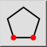
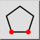
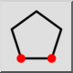
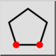

Mnogokotnik (2 točki stranice)
Toolbar / Icon:
 

Menu: Risanje > Oblike > Mnogokotnik (2 točki stranice)
Shortcuts: P, G, 2 | H, P
Commands: linepolygon2 | polygon2 | pg2
Toolbar / Icon:
 

Menu: Risanje > Oblike > Mnogokotnik (2 točki stranice)
Shortcuts: P, G, 2 | H, P
Commands: linepolygon2 | polygon2 | pg2
Konstruira enakomeren poligon s pomočjo dveh ogljišč.